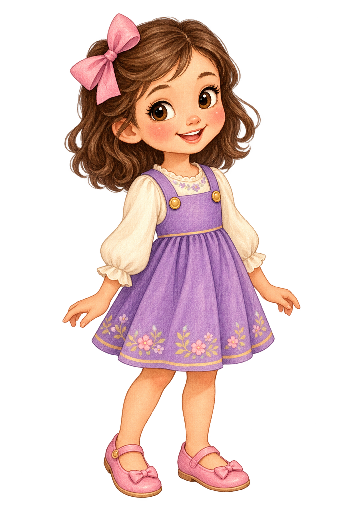
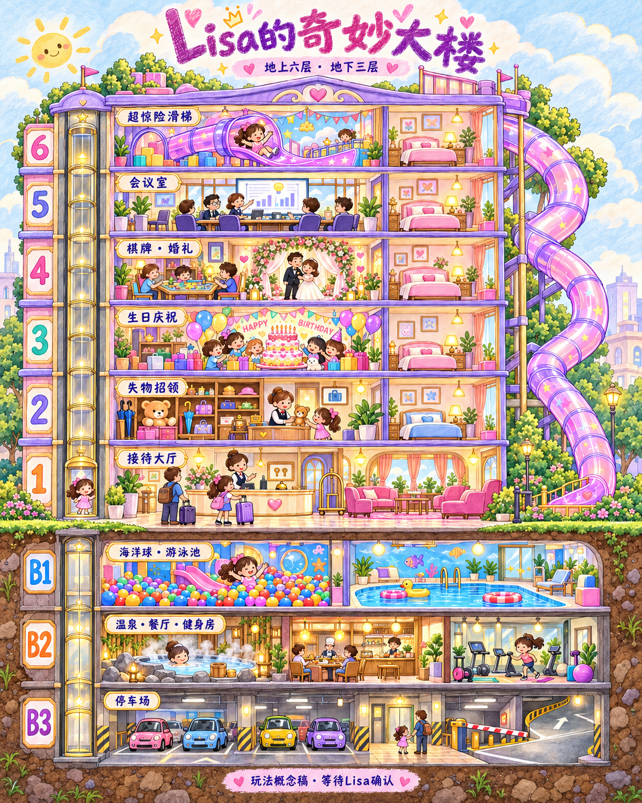

小设计师 Lisa 的互动玩具屋

这是图纸画出的部分，六层之上还有许多客房。点楼层乘电梯，或到“客房”继续往上探索。

选一间房进去看看。客人的房间会显示入住标记。
① 坐电梯点左边的楼层，每个已开放的楼层都可以去。
② 走一走点场景地面，或用方向键和屏幕箭头。
③ 玩起来点闪亮的设施按钮，开始小故事。
④ 摆东西选口袋里的物品，再点场景放下；也可以直接拖进去。
⑤ 当小小前台接待客人、分配房间，完成他们的愿望，再回大厅结账。服务越好，收获的游戏金币越多。
⑥ 收集贴纸完成活动就有一枚。可以重复玩，没有倒计时压力。
声音默认关闭，点右上角开启。贴纸保存在当前浏览器；横屏可以看到更大的场景。